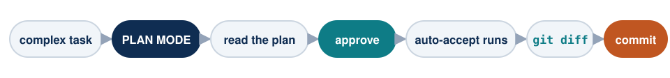

Claude Code for Research
Session 2 — The full research workflow · Faculty Workshop
Faculty of Social Sciences, PUCP · with support from Q-LAB
Today’s plan (3 hours)
| Time | Block | Topic |
|---|---|---|
| 6:00 – 6:20 | 1 | Recap and Plan Mode |
| 6:20 – 6:55 | 2 | Git: your folder’s time machine |
| 6:55 – 7:30 | 3 | ⭐ From 10 PDFs to a dataset: extraction |
| 7:30 – 7:40 | ☕ | Break 1 |
| 7:40 – 8:20 | 3 | ⭐ OCR: scanned PDFs also enter the dataset |
| 8:20 – 8:30 | ☕ | Break 2 |
| 8:30 – 8:45 | 4 | Whisper: your classes become material |
| 8:45 – 8:55 | 5 | MCPs: connect Claude to email, Drive, and more |
| 8:55 – 9:00 | — | Speak to it, don’t type + closing |
Several demos today take minutes to run: we’ll launch them at the start and review results at each block’s end. That’s how you actually work with agents.
Block 1 — Recap and Plan Mode
Last session in 6 moves
| Move | How |
|---|---|
| Open Claude in my folder | cd + paste path → claude |
| Get out of a jam | Esc interrupts · Ctrl+C ×2 exits · claude --resume recovers |
| Project memory | /init generates CLAUDE.md; you edit it |
| Choose model | /model → Opus for everything |
| The golden rule | What it “remembers” must be verified; what it checks against sources is solid |
| Literature, complete | /deep-research → verify against Crossref → library (one login) → LaTeX review compiled |
Control question: Who ran /init on a real project? What did it get right and what did you correct?
Think like research leads
The right way to work with Claude Code isn’t one endless conversation: it’s several sessions in parallel, like assistants with assigned tasks.
- Session 1 → “extract cases from these PDFs into a database”
- Session 2 → “explore and describe this dataset”
- Session 3 → “assemble the presentation with what’s ready”
Each session with one clear, bounded task. You supervise, correct, and decide — like with a human team, but with infinite patience and the cost of a subscription.
Plan Mode: think before touching
Press Shift+Tab until the bottom bar says plan mode: Claude can read and propose, but not touch anything.

When? Whenever you start something new or don’t know where to go. Claude explores, presents a numbered plan, you read it, tweak whatever you want, and only then execute.
Reviewing a plan costs 2 minutes. Reviewing 40 modified files costs an afternoon.
Block 2 — Git: your folder’s time machine
“What did my file look like before?”
This came from one of you after Session 1: “every time Claude modifies a file I feel I have to ask how it was before — just in case.”

That program that saves versions is Git: free, lives on your computer, and Claude operates it for you.
The problem we all know

That mess isn’t a personal flaw: it’s manual version control — and it fails when it matters. Git answers all three questions with one idea →
What it is: photos of your folder with date and message

Each point on the line is a full photo of the folder, retrievable or restorable when needed. One file, the whole history — the three questions from the previous slide, answered.
Three words, three requests
All the vocabulary you need today — and the exact request to copy for each stage:
Repository — the folder watched by Git (“my project, with history”). To set it up:
Turn this folder into a Git repository and confirm it’s ready.Commit — a full photo of the folder, with date and message. To take it:
Save a version of the whole project with the message
"today’s progress: bibliography verified".Diff — the exact comparison between two photos. To ask for it:
What changed in the project since the last saved version?
Show me line by line.And to see the whole timeline: “show me the list of saved versions with date and message”. No more vocabulary today.
⚡ Your turn ① — start the time machine
In the example project’s folder, ask literally this:
Do I have Git installed? If not, install it. Then turn this
folder into a repository and save the first version of the whole
project with the message "starting point".What to observe:
- On Mac, Git often comes installed; on Windows, Claude installs it in a minute.
- A hidden
.gitfolder appears — the box that holds every photo. Don’t touch it. - Your files remain identical. Git observes; it doesn’t get in the way.
⚡ Your turn ② — break, compare, revert
Three requests, in order, over the project’s bibliography:
1. In bibliografia-borrador.md change Arellano-Yanguas’s year
from 2011 to 2019, and delete the note after Salas Carreño.2. What changed in the project since "starting point"?
Show me line by line.3. Oops — revert EVERYTHING to how it was at "starting point".Note what you chose to break: the central reference of the argument now cites a false year — nobody would notice by eye.
What request #2 will show

The diff calls it out instantly: the adulterated year and the deleted note, line by line. And request #3 restores everything, instant and total. You just lost the fear of Claude touching your files.
Have it save automatically: two lines in CLAUDE.md
You don’t need to remember to save versions. Add this to the project’s CLAUDE.md (yesterday’s memory):
From that moment, Claude saves versions by itself — you only ask to go back when needed.
Honest limits: Git is not a backup (it lives on the same disk — cloud is for another day) and it shines with text (.md, .tex, .csv); heavy ZIPs are better left out.
What changes starting today
| Before | Now |
|---|---|
| “How was it yesterday?” → ask Claude, cross your fingers | → ask the repository: exact answer |
| Fear Claude might break something | Every change is reversible |
paper_v2_FINAL(3).docx |
A clean folder with full history |
| Saving versions: another habit to maintain | Two lines in CLAUDE.md and it saves itself |
Block 3 — ⭐ From 10 PDFs to a dataset
The problem, with a name
Peru’s Ombudsman’s Office publishes a monthly report on social conflicts since 2004. There are 269 reports. Each one lists, case by case: type, start date, location, narrative description, and actors involved.
All in PDF. None in Excel.
Nobody has that series as a dataset. Nobody.
This is exactly an assistant’s job
Copying 103 cases from one PDF to Excel takes an afternoon. For twelve months, two weeks. And you’ll need to do it again next month.
What the “dataset” looks like today

Page 54 of report no. 268, as-is: each case has Type, intake date, Case (the narrative), Location, and Actors — running text, case after case, across 122 pages. Everything we need is here. Just in the worst possible format for analysis.
Step 1 — extract
In the example project’s datos/ folder there are 10 reports.
In datos/ there are Ombudsman PDF reports on social conflicts.
Each case has a type, start date, location, description, and actors.
Extract every case into one CSV under datos-limpios/, one row per case,
with a column indicating which report it came from.What to observe: the full loop without intervention — opens the PDF, finds a pattern, writes code, runs it, notices something’s off and fixes it.
Note: filenames are a mess (N°-259, n.º-258, n-265-VF). They’re the real Ombudsman names. Nobody cleaned anything for you.
What it did behind the scenes, step by step

Who does what? (and what travels where)
| Piece | Where it lives | What it does here |
|---|---|---|
Opus — the model you picked in /model |
Anthropic’s servers | Reasons: understands the request, writes code, interprets errors, decides when it’s ready |
| PyMuPDF — a free Python library | Your computer | Heavy lifting: opens ~1,200 pages and extracts the text with coordinates. The model never “reads” all of that |
The tools (Read, Write, Bash) |
Your computer | The hands: connect the model to your files and your Python |
What travels to Anthropic: your request, the 2–3 sample pages it previews, and script errors. What doesn’t: all 10 full PDFs — those are processed by the script, locally.
Note: when the job is to read and judge each narrative — classify demands, summarize cases — the split flips: that’s brain work, not manual labor, and it does consume tokens.
Also, Claude Code uses small, cheap models (Haiku) under the hood for support tasks: summaries, titles, internal searches.
⚠️ The moment extraction doesn’t add up
I ran this over report no. 269 and got three different numbers to the same question — how many cases are there?
| Count | Value |
|---|---|
| Conflicts declared on page 2 of the report | 191 |
Times the word Case: appears in the PDF |
103 |
| Cases with a complete record: description and actors | 64 |
Three reasons, all verifiable by opening the PDF:
Case:doesn’t mark one registry type but three — mediation files, dialogue tables, and conflicts.- The report narrates only the cases with new events that month; the others appear only in summary tables.
- The format changes between reports: only no. 269 numbers cases with
Code:.
Those who don’t validate walk away with a dataset that covers half the universe and overrepresents noisy conflicts — without realizing it. In a paper, that’s fatal.
Last session’s rule, moved from citations to data: each report publishes its own totals — use them.
☕ Break 1 — 10 minutes
Back at 7:40 pm
Did Step 1’s extraction not work for you? Time to call a Q‑LAB assistant — we’ll need it ready when we return.
What if the PDF is a scan? PaddleOCR
Recent reports ship native text. But the historical archive —what lives in libraries— is scanned: the PDF is a photo, and PyMuPDF returns… nothing.
In datos/antiguos/ I left a real case: QUEHACER no. 173, 132 scanned pages with San Marcos library’s watermark over them.
Enter PaddleOCR: a free and open‑source OCR toolkit (Apache 2.0) that runs on your machine.
- PP‑OCRv6 (2026): one model reads 50 languages — Spanish included — and understands tables and structure, not just running text.
- I ran it over those 132 pages: 6 min 32 s, average confidence 0.993.
If you teach on Mac, know this before class
PaddleOCR doesn’t use the GPU on Mac: the Apple Silicon build ships without CUDA and asking for GPU fails with an explicit error. It runs on CPU. Speed comes not from the chip but from processing multiple pages at once: from 10 s per page down to 3 s.
Download and docs: github.com/PaddlePaddle/PaddleOCR
How much does it cost to read 100 scanned pages?
Vision APIs can also “read” a scan — sending each page as an image. The difference is on the bill:
| Tool | Rate (input · output, per million tokens) | 100‑page PDF | The whole file (~31,500 pages) |
|---|---|---|---|
| PaddleOCR, local | no charge | $0 | $0 |
| DeepSeek V4 (vision) — the cheapest | ~$0.44 · $1.32 | ~$0.20 | ~$60 |
| Claude Haiku 4.5 | $1 · $5 | ~$0.60 | ~$190 |
| Claude Opus — the most expensive | $5 · $25 | ~$3.00 | ~$950 |
Estimated with ~2,000 image tokens + 800 text tokens per page; prices as of Aug 2026. “The whole file”: the 269 Ombudsman reports since 2004. Other vision APIs fall in this range.
The smart move isn’t to pick a side: let PaddleOCR extract text for free, and have the model reason over that text — which costs cents, not dollars. Honest exception: badly damaged manuscripts and tables — vision models can win there.
The pipeline, now with scans

⚡ Step 2 — PaddleOCR over the scans
In datos/antiguos/ there’s the scanned magazine. The request, ready to copy:
In datos/antiguos/ there’s a 132-page scanned PDF, with a library
watermark over it.
1. Install PaddleOCR with its dependencies and tell me what you installed.
2. Convert ONLY page 20 and show me the text: I want to validate
quality before proceeding.
3. If I approve, convert the whole document to datos-limpios/ocr/,
one .txt per page and one with everything together.
4. At the end: pages processed, total time, average confidence,
and which pages look doubtful to review manually.What to observe: point 2 is the usual discipline — a sample before running it all; conversion runs on your machine, no tokens; and the confidence in point 4 is the OCR error rate: you measure it, you don’t assume it.
Two things that pop out if you look: the PDF already had a text layer —from the scanner, awful: co11trola11do, Sl!GURA— and the new OCR fixes it; and the watermark disappears if you work on the scanned image instead of the full page.
☕ Break 2 — 10 minutes
Back at 8:30 pm
Step 2’s OCR can keep running by itself in the meantime — that’s how you work with agents: don’t watch them, assign them.
Block 4 — Whisper: your classes become material
The idea
Your most valuable conversations are spoken — classes, seminars, advising — and they usually evaporate.
Whisper: free and local transcription — audio never leaves your machine. On Mac, mlx‑whisper uses the GPU: the 12‑minute exercise video, transcribed in 9 seconds.
The recipe, speaking with Claude
Step 1 — let Claude learn your machine (one time):
I want to transcribe recordings of my classes with Whisper.
First tell me what machine I have (processor, memory) and which
Whisper version I should install. Install it.Claude detects whether your machine can use the fast build (Mac: mlx‑whisper · Windows: faster‑whisper) and sets it up.
Step 2 — transcribe and ask for something useful:
In datos/ there’s videoplayback.mp4: a ~12-minute video on social
conflicts. Transcribe it with timestamps and save the text under
transcripciones/. Then read it and tell me: which actors appear,
what demands they raise, and which Ombudsman cases might connect
to what it narrates.If it fails with FileNotFoundError: 'ffmpeg', it’s not broken: mlx‑whisper ships its own ffmpeg inside; you only need to expose it. Tell it “ffmpeg is not found, fix it” and it will.
This isn’t theory: I did it for this workshop
I transcribed my pilot class with the Q‑LAB assistants (97 min → 90 seconds) and asked for feedback:
“You ran out of material at minute 59; the remaining 38 min were improvised. The class wasn’t time‑calibrated.”
“You picked a repository that was too large for the demo.”
“Your model advice was contradictory: students can’t leave with an actionable rule.”
They were right on all three. This very session you’re seeing was redesigned with that feedback.
Transcriptions also need verification: in the exercise video, only 33 of 491 fragments are speech — and it writes “Anacocha” for Yanacocha. Check coverage and proper names before citing.
Immediate uses: improve your courses, minutes for advising sessions, field interviews (with consent), and the comments you receive when presenting.
Block 5 — MCPs: connect Claude to your other apps
What an MCP is
So far Claude sees your folder. But your academic life also lives in email, calendar, Drive…
An MCP (Model Context Protocol) is a standard plug that gives Claude access — with your permission — to another application. Think of it as USB for apps: a universal connector.
- You connect it once, with your normal login (Google, for example), guided by Claude itself: “connect Gmail via MCP for me.”
- From then on, you ask in English, like everything else in this workshop.
- It’s an open standard — created by Anthropic and adopted industry‑wide today.
The ones you’ll use most
| MCP | What it lets Claude do | A real request |
|---|---|---|
| Gmail | Read and search your email; draft replies | “Find the editor’s emails for my paper and tell me where the review stands.” |
| Google Calendar | View and create events | “Find a 2‑hour slot this week for the paper and reserve it.” |
| Google Drive | Read your shared docs | “Read my coauthor’s comments in Drive and apply them to the doc.” |
| GitHub | Fetch replication packages | “The replication package is on GitHub: download it and explain it to me.” |
| Zotero (community) | Your reference library | “Add the papers in papers/ to my Zotero, with full metadata.” |
Inside Claude Code, /mcp shows which ones you’ve connected. There are hundreds more — the criterion: where does information live that you currently copy by hand?
The fine print (matters)
Connecting email opens the door to your email
- Every sensitive action (send, delete, create) asks for your permission — reading, not always. Connect only what you need.
- Only on your computer. Never connect your accounts on a shared or classroom machine.
- Claude never sends an email without showing you the draft — and if an MCP asks for your password in the chat, something’s wrong: login always happens in the browser, on the official page.
Same pattern, once again: you sign in (browser, official page); it operates with the access you granted — just like the PUCP library proxy in Session 1.
One last tip: speak to it, don’t type
You speak at ~150 words per minute and type at ~40. With voice, a 2‑line request becomes 2 paragraphs — the context, constraints, the “oh, and also…” — and results improve without the model changing: the request improved.
It’s already built‑in: type /voice and hold the space bar while you speak. No need to polish — speak messy; organizing the tangle is the model’s job.
Not just our claim:
“You speak 3x faster than you type, and your prompts get way more detailed.” — Boris Cherny, creator of Claude Code (2026)
“Lean back, switch to /voice and just ramble for like 10 minutes.” — Andrej Karpathy (2026)
“You stop optimizing keystrokes and start optimizing thinking.” — Josef Dvorak (2026)
Keyboards aren’t retiring: it’s dictation, and everyone mixes both. Sources: x.com/bcherny · x.com/karpathy · /voice docs
Closing
| Yesterday you couldn’t | Today you can |
|---|---|
| A chat only saw what you pasted | An agent works inside your folders |
| Bibliographies by hand, with invisible errors | Citation‑by‑citation verification against Crossref |
| Weeks searching literature | /deep-research + a papers folder in 20 minutes |
| “I don’t know LaTeX” | Beamer and PDFs compiled, without writing code |
| “How was this file before?” | Git saves every version; everything is reversible |
| Classes evaporated | Transcribed, analyzed, and with feedback |
Ongoing support: Q‑LAB assistants · the written workshop guide (profesores/) · and Claude itself — ask it first.
Thank you — alexander.quispe@pucp.edu.pe
These slides: written, laid out, and compiled with Claude Code, improved with Whisper analysis from the pilot classes.
Claude Code for Research — Faculty Workshop · PUCP 2026